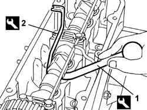
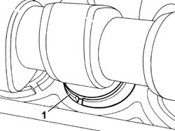
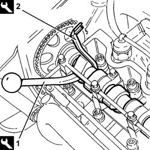
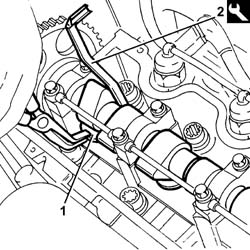

1036H18 VALVE TAPPETS - Adjust. following clearance check
- Path
- Procedures > 10 ENGINE > 1036 TIMING SYSTEM > 1036H TAPPETS AND ROCKER SHAFTS > 1036H18 VALVE TAPPETS - Adjust. following clearance check
- Kind
- repair procedure (removal / refitting; the operation number is the code)
- Applies to
- engines: 1.2 8v, 1.4 8v, 1.9 JTD 8V; all production periods
- Interactive page
- https://sloeber94.github.io/elrnDB-fDbl/en/#/2584217
Applies to: engines: 1.2 8v; all production periods
1. Lower the tappet in question using a suitable tool.
Description | Code | |
|---|---|---|
1 | Lever | 1.860.443.000 |
2. Fit the tool for keeping the tappet lowered, then remove the pressure lever positioned previously.
Description | Code | |
|---|---|---|
2 | Lever | 1.860.724.001 |

Applies to: engines: 1.2 8v; all production periods
1. Remove the valve clearanance adjustment plate and replace it with a one of a suitable thickness.
Remove the tool for keeping the tappet lowered.
Continue, repeating the procedure described for the remaining valves.

Applies to: engines: 1.9 JTD 8V; all production periods
1. Lower the tappet in question using the tool.
Description | Code | |
|---|---|---|
1 | Lever | 1.860.443.000 |
2. Maintain the tappet in lowered position with the tool, then withdarw the lever positioned previously.
Description | Code | |
|---|---|---|
2 | Lever | 1.860.724.001 |

Applies to: engines: 1.9 JTD 8V; all production periods
1. Remove the valve clearanance adjustment plate and replace it with a one of a suitable thickness.
2. Remove the tool used to maintain the tappet in lowered position.
Description | Code | |
|---|---|---|
2 | Lever | 1.860.724.001 |
Proceed in the same way for the remaining valves.

Applies to: engines: 1.4 8v; all production periods
Op. 1048A10 AIR FILTER ASSEMBLY - R.R.
Op. 1056B82 INJECTION/IGNITION SYSTEM E.C.U. (ONE) - R + R
Op. 1056B87 IGNITION/INJECTION SYSTEM CONTROL UNIT SUPPORT - R.R.
Op. 5510C14 IGNITION COIL/S - R+R
Op. 1032D26 TIMING SYSTEM FRONT PROTECTIVE COVER (UPPER PART) - R.R.
Op. 1016A20 SINGLE TAPPET COVER -R.R AND REPLACE GASKET
Op. 1036H14 VALVE TAPPETS - CHECK CLEARANCE
- Lower the tappet in question using the tool.
Description | Code | Function | |
|---|---|---|---|
- | Lever | 1.860.443.000 | Lower tappets |
- Fit the tool for keeping the tappet lowered, then withdraw the pressure lever.
Description | Code | Function | |
|---|---|---|---|
- | Lever | 1.860.724.001 | Lower tappets |
- Remove the valve clearannce adjustment shim and replace it with a one of a suitable thickness.
- Remove the tool for keeping the tappet lowered.
- Proceed in the same way for the remaining valves.
Topics linked from this page (7)
- 1016A20 single cam cover - r + r and replace gasket
- 1032D26 TIMING SYSTEM FRONT PROTECTIVE COVER (UPPER PART) - R.R.
- 1036H14 valve tappets - check clearance
- 1048A10 air cleaner filtering element - replace
- 1056B82 injection/ignition system e.c.u. (one) - r + r
- 1056B87 ignition/injection system control unit mount - r r
- 5510C14 ignition coil/s - r+r